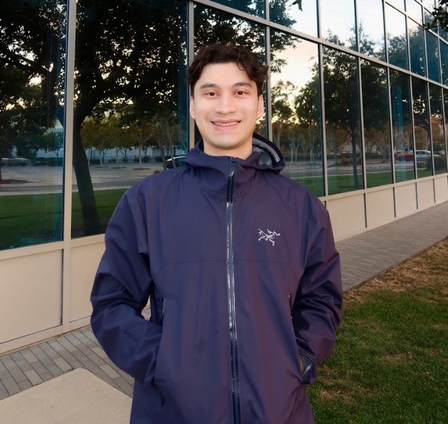

Looking for fullstack/backend development internships
Mission Viejo, CA · US Citizen · Graduating May 2028

About
I'm a computer science student at CSUF who builds full-stack
products end to end: Spring Boot REST APIs and PostgreSQL schemas,
React and TypeScript frontends, and the deployment behind them. I
work in Java, Python and TypeScript, and I create and improve
agentic workflows for coding agents, testing and security-checking
everything they ship. Lately I've been building a driving stack in
simulation, inspired by how well Waymo handles real traffic and
rain.
Outside of code, I'm a car enthusiast who taught himself mechanic
work, I produce music in FL Studio, and I snowboard at Tahoe, Big
Bear and Mammoth.
A modular, Waymo-inspired autonomous-driving software stack in
C++, built in stages: perception, then tracking and own-state
estimation, then prediction, planning and control. It is a
student project that runs in simulation only. The plan is to
connect it to the BeamNG.tech simulator and score every stage
against the simulator's ground truth, which is used to score
results, never to drive. Everything built so far runs on
synthetic data.
Core library. A C++17 library with shared
types and a versioned log format that every later stage will
read and write.
Reproducible scenarios. A seeded synthetic
scenario generator (vehicles with noisy detections) that
produces identical output on every platform.
Baseline and scoring harness. A deliberately
simple nearest-neighbour tracker as the number to beat, and a
harness that matches tracks to ground truth and reports missed
and false detections, position error and identity switches.
CI on two platforms. Builds and tests the C++
on Linux and Windows, with a check that keeps simulator files
out of the repo.
Baseline: on synthetic data across 20 random
scenarios, the baseline tracker's mean position error is about
1.4 m with about 78 identity switches per run. Next up: a
tracking filter, measured against this baseline.
Planned architectureGreen parts are built, dashed parts are planned.
Uses BeamNG.tech by BeamNG GmbH under an academic license. Not
affiliated with or endorsed by BeamNG GmbH.
Formula One 3D Telemetry Visualizer
Live · built June to September 2026
A live 3D replay viewer for Formula One races, with a Spring
Boot backend that streams car positions to a React and Three.js
viewer. It pulls real race data from the public OpenF1 API,
stores it in Redis and PostgreSQL, and streams it over
WebSocket. You can play, pause and seek through a session,
switch between orbit, follow and TV cameras, and watch a gap
tower, a tire widget and a braking heatmap.
System design. Designed a five-module Maven
backend around a simple, modular principle: the core module
defines the data interfaces with no database or Redis
dependency, and the persistence module implements them.
Data pipeline. Built OpenF1 ingestion with
separate poll intervals and backoff for rate limits, a Redis
to STOMP/WebSocket stream, and a replay service with play,
pause and seek.
3D viewer and track meshes. Built the React
and Three.js viewer, plus a Python tool that generates track
meshes from OpenF1 location data and publishes them to AWS S3.
Public-demo hardening. Ran a pre-deployment
security review, capped playback slots per IP, and replaced a
memory-heavy heatmap endpoint with a grid built at ingestion.
Deployed on AWS EC2 with Docker Compose behind a Cloudflare
Tunnel, with CI on GitHub Actions.
Result: replay seek went from about 1 second
late in a one-hour session to about 0.03 seconds anywhere, by
reading only the newest frames instead of the whole history.
View live app
↗
(Thank you for checking out my project if you do 😁👍)
🏆 Best Use of AWS (team award)Built in 24 hours · October 2–3, 2026
Financial Advisor Document Platform
A document platform for wealth-management advisors, built in
24 hours by a team of five. Advisors upload client documents,
AWS Textract extracts the fields, documents are tagged by
type, topic and family member, advisors keep notes, and an AI
assistant answers questions from the client's documents and
notes with citations. We spoke with a real financial advisor
during planning to understand his problems.
What I built
Python analysis service. A FastAPI and
Pydantic service, running on a GPU-hosted AWS SageMaker
endpoint, that turns Textract output for W-2, 1099-R, 1040,
1098, 1095 and bank-statement forms into standard fields.
IDs, account numbers and addresses are redacted as soon as
the text is read, and disagreeing sources are kept as
conflicts with their origin instead of silently picking one.
Rules decide, the model supports. Strict
rules assign each document's type, tags and family member,
and a deterministic rules engine produces findings that each
show the rule behind them. A zero-shot model only suggests,
confirms or vetoes, and checks each figure against its
source so the advisor sees verified, mismatch, unconfirmed
or conflicted. If the model is down, the page still renders.
Advisor notes, end to end. A database
table, API routes scoped to the advisor, a React Notes page,
and indexing into the AWS Bedrock knowledge base so the
assistant cites notes as the advisor's own records.
Pitching it. Explained the platform to the
LPL judges in plain business terms, after learning an
unfamiliar zero-shot AI package and AWS text-extraction
formats during the 24 hours.
Result: my value checks made 0 false
confirmations across a 50-claim test battery. LPL's judges
expressed interest in implementing the platform internally.
A full-stack product I am building and keeping private for now.
Details are withheld on purpose.
Product and architecture. I design the
product and the architecture, write every sprint spec, and set
the guardrails and quality bar.
Agentic workflow. I am testing my own
advanced multistep agentic workflow by using it to build the
product with coding agents (Claude Code). I review the
results, test the product and make the technical calls.
Engineering. Java and Spring Boot backend,
React and TypeScript frontend, unit, integration and
end-to-end tests, and CI that tests and security-scans every
pull request.
Job Application Tracker
Personal project · built May 9–11, 2026
A web app that turns a screenshot of a job listing into a saved
job, then tracks it as Saved, Applied or Rejected. You sign in
with Google, upload a screenshot, and a vision AI model reads
the title, company, date posted and location. Each user sees
only their own jobs.
Requirements and data model. Wrote the
requirements and database design, then specified the build.
Sign-in. Google-only sign-in with an OAuth
2.0 authorization-code flow and a JWT session cookie, so users
never create a password.
Screenshot pipeline. Upload checks, rotation
fix and resizing, then vision extraction into a fixed
four-field format. Relative dates like "5 days ago" become
calendar dates.
Prompt-injection defences. Text hidden in a
screenshot is treated as data: the output is checked against a
fixed format that drops extra fields, and the job URL is never
sent to the model.
Request flowHow requests move through the FastAPI app.